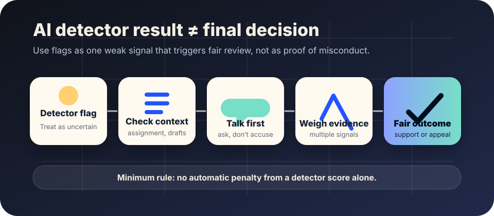

AI literacy
AI detector limits and fair process.
Use this when a school, workplace, publication, or community is worried that someone submitted AI-generated writing. The goal is not to ignore academic integrity or quality standards. The goal is to avoid treating an uncertain detector score as proof.
The short answer
An AI writing detector can be one signal, but it should not be the whole case. No one should face an automatic penalty from a detector result alone.
OpenAI withdrew its own AI Text Classifier because of a low rate of accuracy. In its original classifier note, OpenAI also warned that the classifier was not fully reliable and should not be used as a primary decision-making tool. Independent research has also found that detector behavior can vary across writers and contexts, including higher false-positive risk for some non-native English writing.

Why detector caution matters
- False positives can harm real people. A human-written paper, message, report, or application can be mislabeled as AI-written.
- Writing style is not identity. Formal, fluent, repetitive, translated, edited, neurodivergent, template-based, or second-language writing can be misread by humans and tools.
- The evidence can be hard to reproduce. Detector scores may change with model updates, copied formatting, small edits, paraphrases, or different tools.
- “AI-assisted” is not one behavior. Brainstorming, grammar help, translation, citation formatting, undisclosed generation, and outsourced work raise different policy questions.
- Process quality matters. If a class or organization has not clearly explained allowed use, citation expectations, privacy rules, and appeal paths, enforcement becomes less fair.
Minimum fair-process rule
No automatic discipline, firing, grade penalty, public accusation, or exclusion based only on an AI detector score.
That rule does not prevent review. It prevents a weak signal from becoming a final decision without context, human judgment, and a chance to respond.
A fair review path
1. Pause the accusation
Use neutral language: “A tool raised a concern” rather than “You cheated” or “This is AI-written.”
2. Check the policy
Ask what was actually allowed: idea generation, editing, translation, citation help, drafting, or no AI use at all.
3. Review process evidence
Look for drafts, version history, notes, outlines, sources, comments, timestamps, oral explanation, or revision patterns.
4. Invite an explanation
Give the person a chance to describe their process before deciding what happened.
5. Separate support from misconduct
A struggling writer may need help, clearer instructions, accessibility support, language support, or a chance to revise.
6. Document the decision
Record what evidence was considered, what uncertainty remains, what policy applies, and how to appeal.
What counts as stronger or weaker evidence?
| Evidence | How to treat it |
|---|---|
| Detector score alone | Weak. A reason to ask careful questions, not proof. |
| Sudden writing-style change | Context-dependent. Check assignment type, editing help, language support, time pressure, templates, and prior examples. |
| Missing drafts or notes | Not conclusive. Some people draft in ways that leave little evidence; future assignments can require process artifacts. |
| Version history, drafts, notes, source trail, and oral explanation | Stronger. These can show how work developed and where outside tools helped. |
| Clear admission or documented prohibited use | Relevant, but still apply the published policy, proportional response, and appeal path. |
A calmer conversation script
Start: “I want to understand your process, not jump to a conclusion.”
Name the concern: “A detection tool or review raised a concern, but that is not proof by itself.”
Ask for process: “Can you show or describe your notes, drafts, source choices, edits, or where tools were used?”
Clarify policy: “Here is what the policy allowed and did not allow for this task.”
Close fairly: “Here is what evidence I considered, what decision I made, and how you can respond or appeal.”
Design assignments and workflows that need fewer accusations
- State allowed and disallowed AI uses before work begins.
- Ask for process artifacts: proposal, outline, source list, draft, reflection, or change log.
- Grade or review the reasoning process, not just the polished output.
- Offer legitimate support for language, accessibility, tutoring, editing, and revision needs.
- Use oral check-ins, short reflections, or in-class work when authorship really matters.
- Keep privacy in mind: do not upload sensitive student, worker, client, or unpublished writing to tools without authority and disclosure.
Sources and further reading
- OpenAI — New AI classifier for indicating AI-written text
- OpenAI Help Center — How can educators respond to students presenting AI-generated content as their own?
- Cornell Center for Teaching Innovation — Generative AI, academic integrity, and AI detection
- International Journal for Educational Integrity — Testing of detection tools for AI-generated text
- Liang et al. — GPT detectors are biased against non-native English writers
- UNESCO — Guidance for generative AI in education and research
This guide is public education, not legal advice. High-stakes discipline or employment decisions need the relevant policy, labor, accessibility, privacy, and legal review.